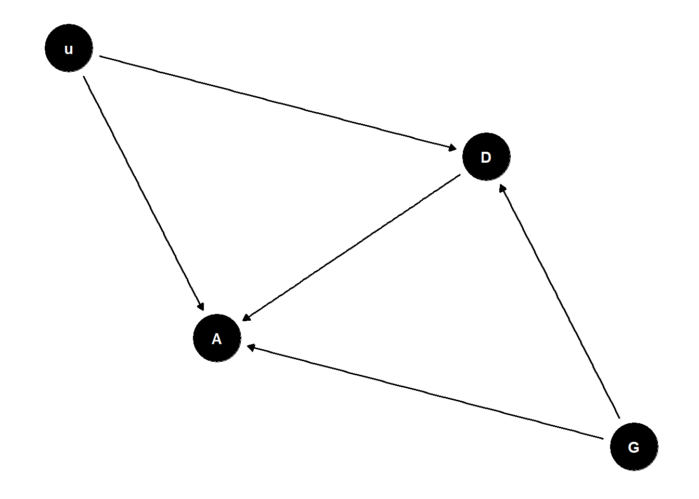
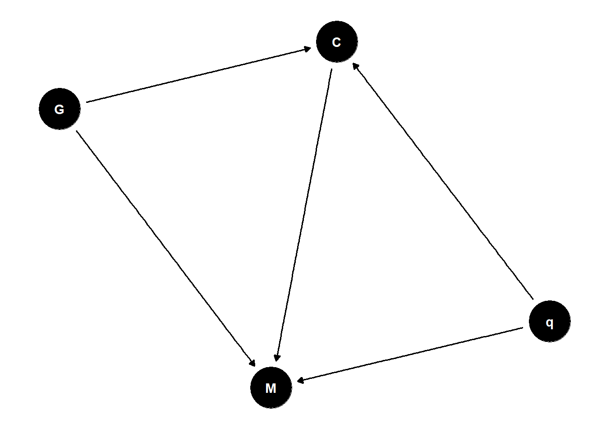

Lecture 10 - Counts & Hidden Confounds
Rose / Thorn
Rose:
Thorn:
Generalized Linear Models
Expected value is some function of an additive combination of parameters
uniform changes in predictor not uniform changes in prediction
all predictor variables interact and moderate one another
inlfuences predictions and uncertainty of predictions
Confounded Admissions
ability is a confound for admissions
include confound in the model:
# continuing from UCBadmit example
# what happens when there is a confound?
set.seed(17)
N <- 2000 # number of applicants
# even gender distribution
G <- sample( 1:2 , size=N , replace=TRUE )
# sample ability, high (1) to average (0)
u <- rbern(N,0.1)
# gender 1 tends to apply to department 1, 2 to 2
# and G=1 with greater ability tend to apply to 2 as well
D <- rbern( N , ifelse( G==1 , u*0.5 , 0.8 ) ) + 1
# matrix of acceptance rates [dept,gender]
accept_rate_u0 <- matrix( c(0.1,0.1,0.1,0.3) , nrow=2 )
accept_rate_u1 <- matrix( c(0.2,0.3,0.2,0.5) , nrow=2 )
# simulate acceptance
p <- sapply( 1:N , function(i)
ifelse( u[i]==0 , accept_rate_u0[D[i],G[i]] , accept_rate_u1[D[i],G[i]] ) )
A <- rbern( N , p )
table(G,D)
table(G,A)
dat_sim <- list( A=A , D=D , G=G )
# total effect gender
m1 <- ulam(
alist(
A ~ bernoulli(p),
logit(p) <- a[G],
a[G] ~ normal(0,1)
), data=dat_sim , chains=4 , cores=4 )
post1 <- extract.samples(m1)
post1$fm_contrast <- post1$a[,1] - post1$a[,2]
precis(post1)
# direct effects - now confounded!
m2 <- ulam(
alist(
A ~ bernoulli(p),
logit(p) <- a[G,D],
matrix[G,D]:a ~ normal(0,1)
), data=dat_sim , chains=4 , cores=4 )
precis(m2,3)
# contrast
post2 <- extract.samples(m2)
post2$fm_contrast_D1 <- post2$a[,1,1] - post2$a[,2,1]
post2$fm_contrast_D2 <- post2$a[,1,2] - post2$a[,2,2]
precis(post2)
dens( post2$fm_contrast_D1 , lwd=4 , col=4 , xlab="F-M contrast in each department" )
dens( post2$fm_contrast_D2 , lwd=4 , col=2 , add=TRUE )
abline(v=0,lty=3)
dens( post2$a[,1,1] , lwd=4 , col=2 , xlim=c(-3,1) )
dens( post2$a[,2,1] , lwd=4 , col=4 , add=TRUE )
dens( post2$fm_contrast_D1 , lwd=4 , add=TRUE )
dens( post2$a[,1,2] , lwd=4 , col=2 , add=TRUE , lty=4 )
dens( post2$a[,2,2] , lwd=4 , col=4 , add=TRUE , lty=4)
dens( post2$fm_contrast_D2 , lwd=4 , add=TRUE , lty=4)- sorting can mask a lot of things through collider bias
Citation Networks

in the absence of strong causal assumptions, we can’t conclude anything
proxies for quality are often poor proxies (e.g., citations)
if you want causal inference, you must make causal assumptions
Sensitivity Analysis
what are the implications of what we don’t know?
assume confound exists, model its consequences for different strengths/kinds of influence
how strong must the confound be to change conclusions?
include quality as an unobserved variable
- change parameter size/strength to test the effect of unobserved confound
# sensitivity
dat_sim$D2 <- ifelse( D==2 , 1 , 0 )
dat_sim$b <- c(1,1)
dat_sim$g <- c(1,0)
dat_sim$N <- length(dat_sim$D2)
m3s <- ulam(
alist(
# A model
A ~ bernoulli(p),
logit(p) <- a[G,D] + b[G]*u[i],
matrix[G,D]:a ~ normal(0,1),
# D model
D2 ~ bernoulli(q),
logit(q) <- delta[G] + g[G]*u[i],
delta[G] ~ normal(0,1),
# declare unobserved u
vector[N]:u ~ normal(0,1)
), data=dat_sim , chains=4 , cores=4 )
precis(m3s,3,pars=c("a","delta"))
post3s <- extract.samples(m3s)
post3s$fm_contrast_D1 <- post3s$a[,1,1] - post3s$a[,2,1]
post3s$fm_contrast_D2 <- post3s$a[,1,2] - post3s$a[,2,2]
dens( post2$fm_contrast_D1 , lwd=1 , col=4 , xlab="F-M contrast in each department" , xlim=c(-2,1) )
dens( post2$fm_contrast_D2 , lwd=1 , col=2 , add=TRUE )
abline(v=0,lty=3)
dens( post3s$fm_contrast_D1 , lwd=4 , col=4 , add=TRUE )
dens( post3s$fm_contrast_D2 , lwd=4 , col=2 , add=TRUE )
plot( jitter(u) , apply(post3s$u,2,mean) , col=ifelse(G==1,2,4) , lwd=3 )you can say the strength of the confound needed to undo the results you found
important thing to report - don’t pretend confounds don’t exist
can’t eliminate possibility of confounding
a lot of the most important science cannot be done experimentally so we need to be able to do these things
Poisson Counts

total count is not binomial: no maximum
- Poisson distribution: very high maximum and very low probability of each success
Poisson distribution uses the log link - must be positive
exponential scaling can be surprising
large priors makes extremely long tails with very large values
want higher mean, lower variance
# model
library(rethinking)
data(Kline)
d <- Kline
d$P <- scale( log(d$population) )
d$contact_id <- ifelse( d$contact=="high" , 2 , 1 )
dat <- list(
T = d$total_tools ,
P = d$P ,
C = d$contact_id )
# intercept only
m11.9 <- ulam(
alist(
T ~ dpois( lambda ),
log(lambda) <- a,
a ~ dnorm( 3 , 0.5 )
), data=dat , chains=4 , log_lik=TRUE )
# interaction model
m11.10 <- ulam(
alist(
T ~ dpois( lambda ),
log(lambda) <- a[C] + b[C]*P,
a[C] ~ dnorm( 3 , 0.5 ),
b[C] ~ dnorm( 0 , 0.2 )
), data=dat , chains=4 , log_lik=TRUE )
compare( m11.9 , m11.10 , func=PSIS )
k <- PSIS( m11.10 , pointwise=TRUE )$k
plot( dat$P , dat$T , xlab="log population (std)" , ylab="total tools" ,
col=ifelse( dat$C==1 , 4 , 2 ) , lwd=4+4*normalize(k) ,
ylim=c(0,75) , cex=1+normalize(k) )
# set up the horizontal axis values to compute predictions at
P_seq <- seq( from=-1.4 , to=3 , len=100 )
# predictions for C=1 (low contact)
lambda <- link( m11.10 , data=data.frame( P=P_seq , C=1 ) )
lmu <- apply( lambda , 2 , mean )
lci <- apply( lambda , 2 , PI )
lines( P_seq , lmu , lty=2 , lwd=1.5 )
shade( lci , P_seq , xpd=TRUE , col=col.alpha(4,0.3) )
# predictions for C=2 (high contact)
lambda <- link( m11.10 , data=data.frame( P=P_seq , C=2 ) )
lmu <- apply( lambda , 2 , mean )
lci <- apply( lambda , 2 , PI )
lines( P_seq , lmu , lty=1 , lwd=1.5 )
shade( lci , P_seq , xpd=TRUE , col=col.alpha(2,0.3))
identify( dat$P , dat$T , d$culture )
# natural scale now
plot( d$population , d$total_tools , xlab="population" , ylab="total tools" ,
col=ifelse( dat$C==1 , 4 , 2 ) , lwd=4+4*normalize(k) ,
ylim=c(0,75) , cex=1+normalize(k) )
P_seq <- seq( from=-5 , to=3 , length.out=100 )
# 1.53 is sd of log(population)
# 9 is mean of log(population)
pop_seq <- exp( P_seq*1.53 + 9 )
lambda <- link( m11.10 , data=data.frame( P=P_seq , C=1 ) )
lmu <- apply( lambda , 2 , mean )
lci <- apply( lambda , 2 , PI )
lines( pop_seq , lmu , lty=2 , lwd=1.5 )
shade( lci , pop_seq , xpd=TRUE , col=col.alpha(4,0.3))
lambda <- link( m11.10 , data=data.frame( P=P_seq , C=2 ) )
lmu <- apply( lambda , 2 , mean )
lci <- apply( lambda , 2 , PI )
lines( pop_seq , lmu , lty=1 , lwd=1.5 )
shade( lci , pop_seq , xpd=TRUE , col=col.alpha(2,0.3) )
identify( d$population , d$total_tools , d$culture )number of effective parameters penalty shows how well the model performs after you drop individual data points
- therefore models with more parameters often have lower effective parameters
gamma-Poisson is the appropriate analog to a student t-test - wider tails
# innovation/loss model
dat2 <- list( T=d$total_tools, P=d$population, C=d$contact_id )
m11.11 <- ulam(
alist(
T ~ dpois( lambda ),
lambda <- exp(a[C])*P^b[C]/g,
a[C] ~ dnorm(1,1),
b[C] ~ dexp(1),
g ~ dexp(1)
), data=dat2 , chains=4 , cores=4 , log_lik=TRUE )
precis(m11.11,2)
plot( d$population , d$total_tools , xlab="population" , ylab="total tools" ,
col=ifelse( dat$C==1 , 4 , 2 ) , lwd=4+4*normalize(k) ,
ylim=c(0,75) , cex=1+normalize(k) )
P_seq <- seq( from=-5 , to=3 , length.out=100 )Count GLMs
distributions from constraints
maximum entropy priors: binomial, Poisson, and extensions
robust regressions: beta-binomial, gamma-Poisson